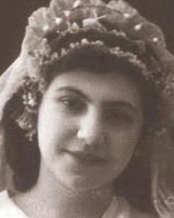

Азнаурьянц Астхик.Род: Азнаурянц
Продолжительность жизни: 91
Принадлежала к роду Епроносянов.
Когда в ЗАГСе её спросили:
– Будете ли Вы менять фамилию?
– А смысл? – ответила Астхик, – если фамилии отличает только одна буква.
Была участницей Великой Отечественной войны
Муж: Азнаурьян Арменак Петросович
Дочь: Азнаурьян Валентина Арменаковна
Сын: Азнаурьян Степан Арменакович
Родилась: 12.12.1923.
Вышла замуж.
Родилась дочь: Азнаурьян Валентина Арменаковна, 14.09.1946.
Родился сын: Азнаурьян Степан Арменакович, 20.07.1949, Краснодар.
Умерла: 17.06.2015, Краснодар. Славянское кладбище, 0 кв., 5 уч., 13 ряд, 545/п.